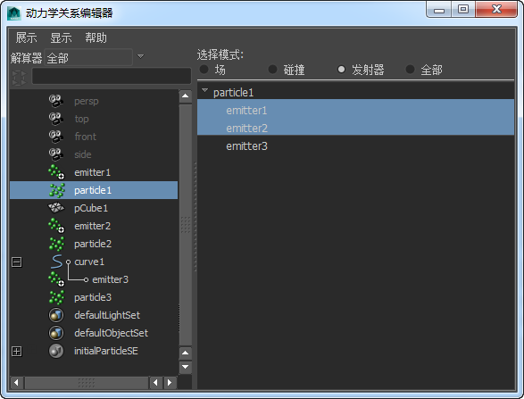

可以将粒子对象连接到当前已与其他对象连接的发射器。
例如，可以创建包含两个定向粒子发射器（即 emitter1 和 emitter2）的曲线。Emitter1 向右侧发射粒子球体，而 Emitter2 向左侧发射粒子条纹。在下图中，particle1 为球形粒子，particle2 为条纹粒子。
如果选择 particle1，则“动力学关系”(Dynamic Relationships)编辑器将显示已连接到 emitter1。
您可以选择右面板中的发射器的任意一个、都不选择或都选择，以将其连接到 particle1。如果将 particle1 同时连接到 emitter2 和 emitter1，则 Maya 将从这两个发射器发射球体。